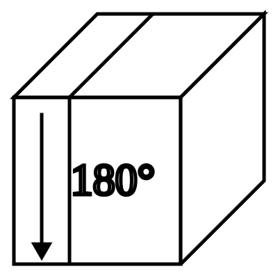
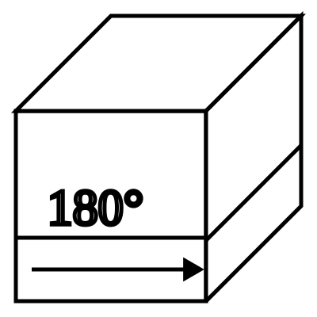
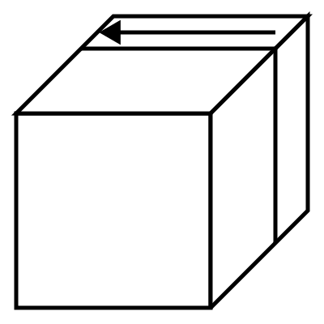
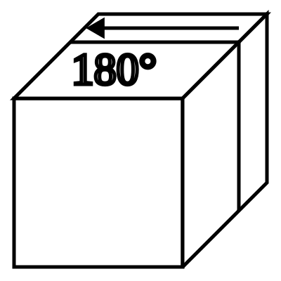
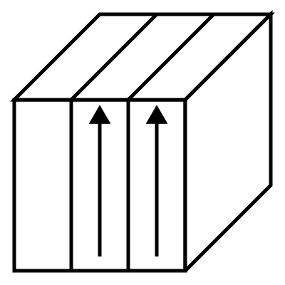
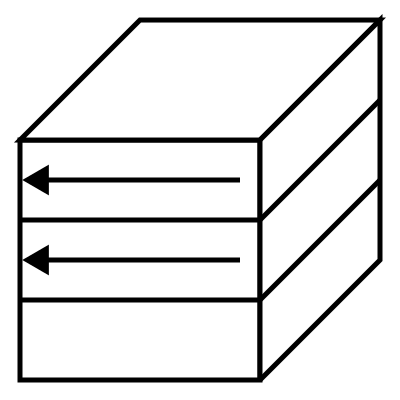
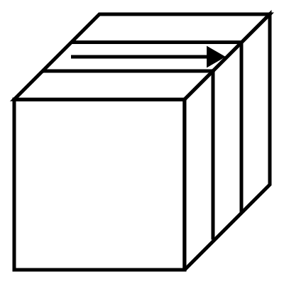
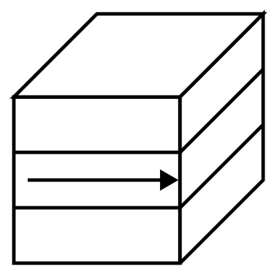
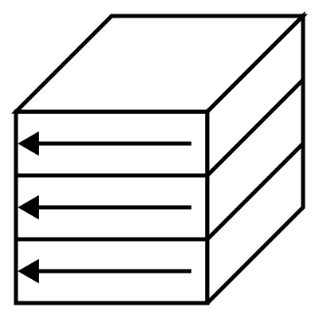
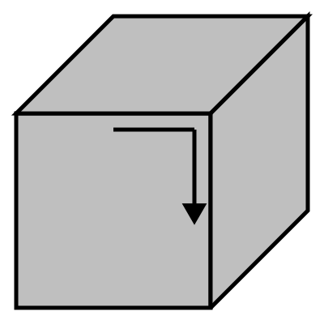

CUBE MANUAL
回転記号
キューブの動きを、図と記号で理解する

回転記号を理解しよう
初心者向け手順では、キューブの回し方を図で示しました。キューブの動きをアルファベットで表したものを回転記号と呼びます。
回転記号を身につけると、手順を短く正確に読み書きできるようになります。この章では、記号の意味と基本的な回し方を説明します。
ここで紹介する指の使い方は一例です。手の大きさや持ち方に合わせて、無理のない回し方を選んでください。
外層の回転
外層の回転は6種類あります。それぞれの面の位置の頭文字を取って名前がついています。
時計回り・反時計回りは、回す面を正面から見た向きで判断します。
右の面の回転
: R

: R'

: R2

: R2'
右面の回転には、Rightの頭文字であるRを使います。時計回りはR、反時計回りはR'（アール・プライム）と表記します。180度回転はR2です。R2とR2'はキューブの状態は同じですが、本書では回す向きを指定したい場合にR2'を使うことがあります。
回し方：右手の親指と中指でエッジパーツを持ち、2本の指でひねるように回します。
上の面の回転

: U

: U'

: U2

: U2'
UはUpの頭文字です。時計回りはU、反時計回りはU'と表記します。
回し方：Uは右手の人差し指、U'は左手の人差し指で回すのが基本です。状況によっては、反対側の人差し指で押し込むように回すこともあります。U2は、人差し指に続けて中指を使うと素早く回せます。
手前の面の回転

: F

: F'

: F2
FはFrontの頭文字です。
回し方：Fは右手の人差し指、F'は右手の親指で押し上げるように回すことが多いです。
左の面の回転

: L

: L'

: L2
LはLeftの頭文字です。RとLでは回転方向の見え方が異なるため、矢印を確認してください。
回し方：左手の親指と中指で、ひねるように回します。
下の面の回転

: D

: D'

: D2
DはDownの頭文字です。UとDでは回転方向の見え方が異なるため、矢印を確認してください。
回し方：Dは左手の薬指、D'は右手の薬指で回すのが基本です。
後ろの面の回転

: B

: B'

: B2
BはBackの頭文字です。FとBでは回転方向の見え方が異なるため、矢印を確認してください。
回し方：B面は直接回しにくいため、使う場面は多くありません。キューブを手前に傾けてUやU'を回すイメージで動かします。
その他の回し方
他にもよく使われる回転記号があります。
2層同時回転

: Rw

: Uw

: Fw
2層を同時に回すときは、wideを表すwをつけます。反時計回りはRw'、180度回転はRw2のように表記します。
回し方：1層だけを回すときと同じ指使いで、2層をまとめて動かします。
真ん中の層の回転

: M

: M'

: S

: S'

: E

: E'
中央の層の回転にはM、S、Eを使います。回転方向は、それぞれL、F、Dと同じ向きです。
回し方：Mは右手の薬指で中段を押し下げ、M'は同じ指で押し上げるように回すのが基本です。
キューブそのものの回転

: x

: y

: z
キューブ全体を回転させるときはx、y、zを使います。回転方向は、それぞれR、U、Fと同じ向きです。